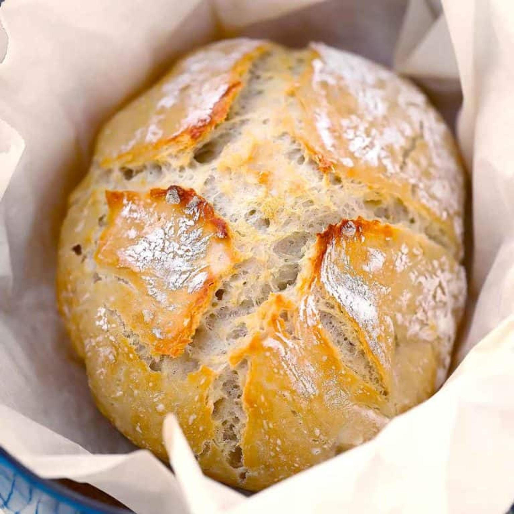

Dobbie's Dutch-Oven Bread

Dobbie's Dutch-Oven Bread
Total Time:2 1/2 hours
Ingredients
- 1 1/2 cups warm water (about 100 degrees F)
- 1 packet yeast (active dry, instant, or quick rise- 2.25 teaspoons)
- 11/2 tablespoon fine grain salt
- 3 1/4 cups all-purpose flour or bread flour, plus more for dusting
Instructions
- In a large bowl, mix together the warm water (1.5 cups), yeast (1 packet/2.25 teaspoons), and table salt (1/2 tablespoon), until yeast and salt are fully or almost dissolved.
- Add the flour (3.25 cups) to the bowl all at once and stir together until a sticky dough forms. Don't worry about mixing it too much, just make sure everything is uniformly wet. It WILL be messy and sticky. You can scrape what's left on the spoon with a silicone spatula.
- Cover the bowl with a kitchen towel (or place the container to the lid on ajar). Leave it for 2-3 hours to rise in a somewhat warm place (If it's cold out, I like to preheat my oven for a few minutes, then turn it off, then place the bowl in the oven, trapping the heat inside. If your house is warm just leave it out, or if it's warm outside you can place it there).
- After the two-three hour rise time, you have two options: bake, or store in the fridge.
- 30 minutes to an hour before you are ready to bake, preheat your oven to 450 degrees F. Place your Dutch oven in the oven, with the lid ON, while the oven is preheating. Once the oven reaches 450, keep it preheating for another 20 minutes, so the Dutch oven gets good and hot.
- Scrape the dough into the edge of a piece of parchment paper dusted with flour. Make it into as much of a "loaf" shape as you can by folding the edges up on top of it (a silicone spatula works well for this).
- Then, use the edges of the parchment paper to flip the loaf over so the floured side is on top and the loaf is in the center of the parchment paper. Don't worry about it looking beautiful or smooth on top. My Dutch oven is an oval, so I made an oval shape. You can do a circle if yours is round.
- Optional: use a very sharp knife or clean razor blade to cut a few slits across the top of the loaf about 1/2" deep, across the entire top. I did this in a cross shape for mine.
- Take out the preheated Dutch oven and take off the lid, carefully! Grab the parchment from the sides and place the loaf in your Dutch oven.
- Place the cover back on the Dutch oven and place in the preheated oven on the center rack. Bake for 35 minutes at 450 degrees F (40 minutes if dough was cold from the fridge). Remove the lid and bake for another 5-10 minutes, until a golden brown color forms- longer if necessary. Remove the loaf from the dutch oven (grabbing the sides of the parchment paper works well here) and place it on a wire rack or cutting board to cool for at least 10 minutes (preferably 30 minutes – an hour, if you have time) before slicing.